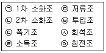
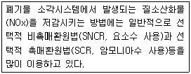
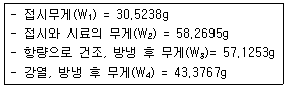
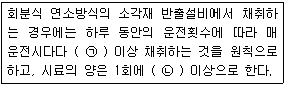
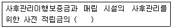
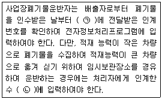
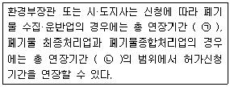
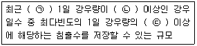

폐기물처리기사 (2017-09-23 기출문제)
1과목: 폐기물 개론
1. 일반적인 폐기물관리 우선순위로 가장 옳은 것은?
- 재사용 → 감량 → 물질재활용 → 에너지회수 → 최종처분
- 재사용 → 감량 → 에너지회수 → 물질재활용 → 최종처분
- 감량 → 재사용 → 물질재활용 → 에너지회수 → 최종처분
- 감량 → 물질재활용 → 재사용 → 에너지회수 → 최종처분
(정답률: 81%)

2. 폐기물처리장치 중 쓰레기를 물과 섞어 잘게 부순 뒤 다시 물과 분리시키는 습식처리장치는?
- Baler
- Compactor
- Pulverizer
- Shredder
(정답률: 90%)
3. 2015년 폐기물 발생량이 1100 ton 인 도시의 연간 폐기물 발생 증가율이 10%라고 할 때 2020년의 폐기물 예측발생량(ton)은?
- 1671.6
- 1771.6
- 1871.6
- 1971.6
(정답률: 83%)
4. 도시폐기물의 수거노선 설정방법으로 가장 거리가 먼 것은?
- 언덕인 경우 위에서 내려가며 수거한다.
- 반복운행을 피한다.
- 출발점은 차고와 가까운 곳으로 한다.
- 가능한 한 반시계방향으로 설정한다.
(정답률: 95%)
5. 퇴비화의 진행 시간에 따른 온도의 변화 단계가 순서대로 연결된 것은?
- 고온단계 – 중온단계 – 냉각단계 – 숙성단계
- 중온단계 – 고온단계 – 냉각단계 – 숙성단계
- 숙성단계 – 고온단계 – 중온단계 – 냉각단계
- 숙성단계 – 중온단계 – 고온단계 – 냉각단계
(정답률: 85%)
6. 함수율이 97%인 수거분뇨를 55% 함수율로 건조 하였다면 그 부피변화는? (단, 비중은 1.0)
- 1/5로 감소
- 1/10로 감소
- 1/15로 감소
- 1/20로 감소
(정답률: 75%)
7. 밀도가 200 kg/m3 인 폐기물을 압축하여 밀도가 500 kg/m3 가 되도록 하였다면 압축된 폐기물 부피는?
- 초기부피의 25%
- 초기부피의 30%
- 초기부피의 40%
- 초기부피의 45%
(정답률: 82%)
8. 폐기물 관리차원의 3R에 해당하지 않는 것은?
- Resource
- Recycle
- Reduction
- Reuse
(정답률: 80%)
9. 폐기물 적환장의 필요성에 대한 설명으로 틀린것은?
- 고밀도 주거지역이 존재할 때 필요하다.
- 작은 용량의 수집차량을 사용할 때 필요하다.
- 상업지역에서 폐기물수집에 소형용기를 많이 사용할 때 필요하다.
- 불법투기와 다량의 어지러진 폐기물이 발생할 때 필요하다.
(정답률: 92%)
10. 수중에 용해되어 있거나 고체상태로 부유하고 있는 유기물을 고온, 고압 하에 공기에 의해 산화시키는 처리방법은?
- Hydrogasification
- Hydrogenation
- Wet Air Oxidation
- Air Stripping
(정답률: 81%)
11. 폐기물 관로수송시스템에 대한 설명으로 틀린것은?
- 폐기물의 발생밀도가 높은 지역이 보다 효과적이다.
- 대용량 수송과 장거리 수송에 적합하다.
- 조대폐기물은 파쇄 등의 전처리가 필요하다.
- 자동집하시설로 투입하는 폐기물의 종류에 제한이 있다.
(정답률: 87%)
12. 지정폐기물인 폐석면의 입도를 분석한 결과가 d10 = 3mm, d30 = 6mm, d60 = 12mm, d90 = 15mm 이었을 때 균등계수와 곡률계수는?
- 1, 0.5
- 1, 10
- 4, 0.5
- 4, 1.0
(정답률: 84%)
13. 폐기물 성상분석에 대한 분석절차로 옳은 것은?
- 물리적 조성 → 밀도측정 → 건조 → 절단 및 분쇄 → 발열량분석
- 밀도측정 → 물리적 조성 → 건조 → 절단 및 분쇄 → 발열량분석
- 물리적 조성 → 밀도측정 → 절단 및 분쇄 → 건조 → 발열량분석
- 밀도측정 → 물리적 조성 → 절단 및 분쇄 → 건조 → 발열량분석
(정답률: 74%)
14. 물렁거리는 가벼운 물질로부터 딱딱한 물질을 선별하는 데 사용되는 선별장치는?
- Secators
- Stoners
- Jigs
- Tables
(정답률: 78%)
15. 폐기물 발생량 조사 및 예측에 대한 설명으로 틀린 것은?
- 생활폐기물 발생량은 지역규모나 지역특성에 따라 차이가 크기 때문에 주로 kg/인·일으로 표기한다.
- 사업폐기물 발생량은 제품제조공정에 따라 다르며 원단위로 ton/종업원수, ton/면적 등이 사용된다.
- 우리나라 폐기물관리법 상 폐기물관리 종합계획은 10년을 주기로 한다.
- 폐기물 발생량 예측방법으로 적재차량계수법, 직접계근법, 물질수지법이 있다.
(정답률: 77%)
16. 적환장(transfer station)에서 수송차량에 옮겨 싣는 방식이 아닌 것은?
- 직접 투하 방식
- 저장 투하 방식
- 연속 투하 방식
- 직접·저장 투하 결합방식
(정답률: 79%)
17. 직경이 1.0m인 트롬멜스크린의 최적 속도(rpm)는?
- 약 63
- 약 42
- 약 19
- 약 8
(정답률: 57%)
18. 폐기물의 분석 결과 가연성 물질의 함유율이 35% 이었다. 밀도가 250 kg/m3인 폐기물 16m3 에 포함된 가연성 물질의 양(kg)은?
- 1200
- 1400
- 1600
- 1800
(정답률: 85%)
19. 단열열량계로 측정할 때 얻어지는 발열량에 대한 설명으로 가장 적절한 것은?
- 습량기준 저위발열량
- 습량기준 고위발열량
- 건량기준 저위발열량
- 건량기준 고위발열량
(정답률: 69%)
20. 관거(Pipeline)를 이용한 수거방식인 공기수송에 관한 내용으로 틀린 것은?
- 공기수송은 고층주택밀집지역에서 적합하다.
- 공기수송은 소음방지시설을 설치해야 한다.
- 공기수송에 소요되는 동력은 캡슐수송에 소요되는 동력보다 훨씬 적게 소요된다.
- 공기수송 방법 중 가압수송은 진공수송보다 수송 거리를 더 길게 할 수 있다.
(정답률: 88%)
2과목: 폐기물 처리 기술
21. 지정폐기물을 고화처리 후 적정처리 여부를 시험 조사하는 항목이 아닌 것은?
- 압축강도
- 인장강도
- 투수율
- 용출시험
(정답률: 64%)
22. 토양오염의 영향에 대한 설명으로 가장 거리가 먼 것은?
- 분해되지 않는 농약의 토양축적
- 비료 속의 중금속으로 인한 농경지의 오염
- 오염된 토양 인근하천의 부영양화
- 홑알구조(단립구조) → 떼알구조(입단구조)로의 변화
(정답률: 81%)
23. 분뇨 소화조에서 소화 슬러지를 1일 투입량 이상 과다하게 인출하면 소화조 내의 상태는?
- 산성화 된다.
- 알칼리성으로 된다.
- 중성을 유지한다.
- pH의 변동은 없다.
(정답률: 62%)
24. 매립 폭 5m, 한 층의 매립고 3m인 셀에 매일 100 ton의 폐기물을 매립하는 매립지에서 초기 압축 밀도가 0.5 ton/m3 일 때 일일 복토재 소요량(m3)은? (단, 셀의 사면경사 = 3:1, 일일복토의 두께 = 15 cm)
- 32.08
- 34.08
- 36.08
- 38.08
(정답률: 37%)
25. 소각시설에서 다이옥신 생성에 미치는 영향인자가 아닌 것은?
- 투입되는 폐기물 종류
- 질소산화물 농도
- 배출(후류)가스 온도
- 연소공기의 양 및 분포
(정답률: 61%)
26. 지하수 상·하류 두 지점의 수두차 1m, 두지점 사이의 수평거리 500 m, 투수계수 200m/day 일 때 대수층의 두께 2m, 폭 1.5m인 지하수의 유량(m3/day)은?
- 1.2
- 2.4
- 3.6
- 4.8
(정답률: 55%)
27. 퇴비화 과정에서 총질소 농도의 비율이 증가되는 원인으로 가장 알맞은 것은?
- 퇴비화 과정에서 미생물의 활동으로 질소를 고정 시킨다.
- 퇴비화 과정에서 원래의 질소분이 소모되지 않으므로 생긴 결과이다.
- 질소분의 소모에 비해 탄소분이 급격히 소모되므로 생긴 결과이다.
- 단백질의 분해로 생긴 결과이다.
(정답률: 71%)
28. 다음 물질을 같은 조건하에서 혐기성 처리를 할때 슬러지 생산량이 가장 많은 것은?
- Protein
- Amino acid
- Carbohydrate
- Lipid
(정답률: 70%)
29. COD/TOC ＜ 2.0, BOD/COD ＜ 0.1, COD가 500 mg/L 미만이며 매립연한이 10년 이상 된 곳에서 발생된 침출수의 처리공정 효율성을 틀리게 나타낸 것은?
- 활성탄 – 불량
- 이온교환수지 – 보통
- 화학적침전(석회투여) - 불량
- 화학적산화 – 보통
(정답률: 62%)
30. 진공 여과 탈수기로 투입되는 슬러지량이 240m3/hr 이고 슬러지 함수율 98%, 여과율(고형물기준)이 120 kg/m2·hr의 조건을 가질 때 여과 면적(m2)은? (단, 탈수기는 연속가동, 슬러지 비중 = 1.0)
- 40
- 50
- 60
- 70
(정답률: 62%)
31. 폐기물 매립지의 중간 복토재 또는 당일 복토재로써 점토를 사용할 경우, 기능상 가장 취약한 것은?
- 외관 및 쓰레기 비산 방지
- 위생 해충 서식 억제
- 수분 보유능력
- 표면수 침투 억제
(정답률: 60%)
32. 매립 시 폐기물 분해과정을 시간 순으로 옳게 나열한 것은?
- 혐기성 분해 → 호기성 분해 → 메탄 생성 → 유기산 형성
- 호기성 분해 → 혐기성 분해 → 산성물질 생성→ 메탄 생성
- 호기성 분해 → 유기산 생성 → 혐기성 분해 → 메탄 생성
- 혐기성 분해 → 호기성 분해 → 산성물질 생성→ 메탄 생성
(정답률: 80%)
33. 수은을 함유한 폐액 처리방법으로 가장 알맞은 것은?
- 황화물침전법
- 열가수분해법
- 산화제에 의한 습식산화분해법
- 자외선 오존 산화처리
(정답률: 66%)
34. C/N비가 낮은 경우(20 이하)에 대한 설명이 아닌 것은?
- 암모니아 가스가 발생할 가능성이 높아진다.
- 질소원의 손실이 커서 비료효과가 저하될 가능성이 높다.
- 유기산 생성양의 증가로 pH가 저하된다.
- 퇴비화 과정 중 좋지 않은 냄새가 발생된다.
(정답률: 72%)
35. 지정폐기물의 고화처리에 대한 설명으로 알맞지 않은 것은?
- 고화의 비용은 다른 처리에 비하여 일반적으로 저렴하다.
- 처리공정은 다른 처리공정에 비하여 비교적 간단하다.
- 고화처리 후 폐기물의 밀도가 커지고 부피가 줄어 운반비를 절감할 수 있다.
- 고화처리 후 유해물질의 용해도는 감소한다.
(정답률: 65%)
36. 매립방법의 분류에 관한 설명으로 가장 알맞은 것은?
- 폐기물 유·무해성에 따른 분류는 혐기성 매립구조, 혐기성 위생매립, 준호기성 매립 등으로 나눌 수 있다.
- 폐기물 분해성상에 따른 분류는 차단형, 안정형, 관리형 매립 등으로 나눌 수 있다.
- 폐기물 매립 방법에 따라 단순매립, 위생매립, 안전매립 등으로 나눌 수 있다.
- 폐기물 매립 형상에 따른 분류는 도랑식, 지역식 등으로 나눌 수 있다.
(정답률: 71%)
37. 다음은 분뇨를 혐기성 소화와 활성슬러지 공법을 연계하여 처리할 때의 공정들이다. 가장 합리적 처리 계통 순서는?

- ㉤-㉥-㉠-㉡-㉢-㉧-㉣-㉦
- ㉥-㉧-㉤-㉠-㉡-㉦-㉢-㉣
- ㉥-㉤-㉧-㉠-㉡-㉢-㉣-㉦
- ㉥-㉤-㉠-㉡-㉦-㉢-㉧-㉣
(정답률: 58%)
38. 폐기물을 위생 매립하여 처리할 때 가장 큰 단점은?
- 다른 방법에 비해 초기투자비 비용이 높다.
- 처분대상 폐기물의 증가에 따른 추가인원 및 장비가 크다.
- 인구밀집 지역에서는 경제적 수송거리 내에서 부지확보 문제가 있다.
- 폐기물의 분류가 선행되어야 한다.
(정답률: 64%)
39. 매립 후 중기단계(10년 정도)에서 배출되는 매립가스의 주요 성분은?
- CO2, CH4
- CO, CH4
- H2, CO2
- CO, H2
(정답률: 77%)
40. 쓰레기 수거차의 적재능력은 10 m3이고 또한 8톤을 적재할 수 있다. 밀도가 0.7 ton/m3 인 폐기물 3000 m3을 동시에 수거하려고 할 때 필요한 수거차(대)는?
- 200
- 250
- 300
- 350
(정답률: 71%)
3과목: 폐기물 소각 및 열회수
41. 탄소 80%, 수소 10%, 산소 8%, 황 2%로 조성된 중유 1kg을 공기비 1.2로 완전연소시킬 때 필요한 실제공기량(Sm3/kg)은?
- 8.5
- 9.5
- 10.5
- 11.5
(정답률: 60%)
42. 폐기물 소각시설의 연소실에 대한 설명으로 틀린 것은?
- 연소실은 내화재를 충전한 연소로와 Water wall연소기로 구분된다.
- 연소로의 모양은 대부분 직사각형인 Box 형식이다.
- Water wall 연소기는 여분의 공기가 많이 소요되므로 대기오염 방지시설의 규모가 커진다.
- 대체로 주입되는 공기량은 폐기물 주입량의 13~17배 정도가 된다.
(정답률: 58%)
43. 전처리기술에 해당되는 것은?
- 열분해
- 용융
- 발효
- 파쇄
(정답률: 77%)
44. 다음 연소장치 중 가장 적은 공기비의 값을 요구하는 것은?
- 가스 버너
- 유류 버너
- 미분탄 버너
- 수동수평화격자
(정답률: 75%)
45. NOx 처리를 위하여 사용되는 선택적촉매환원기술(SCR)에 대한 설명으로 틀린 것은?
- SCR은 촉매하에서 NH3, CO 등의 환원제를 사용하여 NOx를 N2로 전환시키는 기술이다.
- 연소방법의 개선이나 저농도 NOx 연소기의 사용은 공정상에서 직접 이루어지는 질소산화물 저감방법이다.
- 촉매독과 분진의 부착에 따른 폐색과 압력손실을 방지하기 위하여 유해가스 제거 및 분진제거 장치 후단에 설치되는 것이 일반적이다.
- 분진제거 SCR로 유입되는 배출가스의 온도가 150~200℃ 이므로 제거효율의 저하 및 저온부식의 우려가 있다.
(정답률: 36%)
46. 화씨온도 100℉는 몇 ℃인가?
- 35.2
- 37.8
- 39.7
- 41.3
(정답률: 73%)
47. 소각로의 설계기준이 되고 있는 저위발열량에 대한 설명으로 옳은 것은?
- 쓰레기 속의 수분과 연소에 의해 생성된 수분의 응축열을 포함한 열량
- 고위발열량에서 수분의 응축열을 빼고 남는 열량
- 쓰레기를 연소할 때 발생되는 열량으로 수분의 수증기 열량이 포함된 열량
- 연소 배출가스 속의 수분에 의한 응축열
(정답률: 82%)
48. 소각로의 화격자에서 고온부식 방지대책으로 틀린 것은?
- 화격자의 냉각률을 올린다.
- 부식되는 부분으로 고온 공기를 주입하지 않는다.
- 화격자 재질을 고크롬강, 저니켈강으로 한다.
- 공기 주입량을 감소시켜 화격자를 가온시킨다.
(정답률: 76%)
49. CO 100 kg을 이론적으로 완전연소시킬 때 필요한 O2 부피(Sm3)와 생성되는 CO2 부피(Sm3)는?
- 20, 40
- 40, 80
- 60, 120
- 80, 160
(정답률: 68%)
50. 소각로 설계에서 중요하게 활용되고 있는 저위 발열량을 추정하는 방법에 대한 설명으로 옳지 않은 것은?
- 폐기물의 입자분포에 의한 방법
- 단열열량계에 의한 방법
- 물리적조성에 의한 방법
- 원소분석에 의한 방법
(정답률: 67%)
51. 플라스틱 처리에 가장 유리한 소각방식은?
- Grate 방식
- 고정상 방식
- 로타리킬른 방식
- Stoker 방식
(정답률: 50%)
52. 다음 집진장치 중 압력손실이 가장 큰 것은?
- Venturi Scrubber
- Cyclone Scrubber
- Packed Tower
- Jet Scrubber
(정답률: 69%)
53. 유동층 소각로에서 슬러지의 온도가 30℃, 연소 온도 850℃, 배기온도 450℃일 때, 유동층 소각로의 열효율(%)은?
- 49
- 51
- 62
- 77
(정답률: 60%)
54. 다음 공법을 비교 설명한 내용으로 옳은 것은?

- 소요공사비는 선택적 촉매환원법이 선택적비촉매 환원법보다 저렴하다.
- 유지관리비는 선택적 촉매환원법이 선택적비촉매 환원법보다 저렴하다.
- 질소산화물 제거율은 선택적 촉매환원법이 선택적 비촉매환원법보다 높다.
- 취급약품의 안전성은 선택적 촉매환원법이 선택적 비촉매환원법보다 안전하다.
(정답률: 75%)
55. 소각에 대한 설명으로 틀린 것은?
- 1차연소실은 폐기물의 건조, 휘발, 점화시키는 기능을, 2차연소실은 1차연소실의 미연소분을 연소시키는 기능을 한다.
- 연소기내 격벽(baffle)을 설치함으로써 불완전연소에 의한 가스가 유출되는 문제를 예방할 수 있다.
- 폐기물의 이송방향과 연소가스의 흐름방향에 따라 로본체의 형식을 구분하며, 소각폐기물의 성상과 수분에 따라 형식을 달리 적용한다.
- 불완전연소가능량이란 연소율 및 소각잔사의 중량비를 나타내는 척도로써 소각재 잔사 중에 존재하는 미연소 분량을 표시한다.
(정답률: 56%)
56. 다음 조건일 때 도시 폐기물의 저위발열량(HL, kcal/kg)은? (단, 도시폐기물의 중량 조성(C=65%, H=6%, O=8%, S=3%, 수분=3%), 각 원소의 단위질량당 열량(C=8100 kcal/kg, H=34000 kcal/kg, S=2200 kcal/kg), 연소조건은 상온, 상온상태의 물의 증발잠열=600 kcal/kg)
- 5473
- 6689
- 7135
- 8288
(정답률: 64%)
57. 소각로 내의 온도가 너무 높으면 NOx나 Ox 가 많이 생성되지만 반대로 온도가 너무 낮을 경우, 불완전 연소에 의해 생성되는 물질은?
- H2O와 CO2
- HC와 CO
- Ca(OH)2와 SO2
- Cl과 CH4
(정답률: 77%)
58. 질소산화물의 제거 처리를 위한 선택적 촉매환원법(SCR)과 비교한 선택적 비촉매환원법(SNCR)에 대한 설명으로 틀린 것은?
- 운전온도는 850~950℃ 정도로 고온이다.
- 다이옥신의 제거는 매우 어렵다.
- 설치공간이 적고 설치비도 저렴하다.
- 암모니아 슬립(Slip)이 적다.
(정답률: 55%)
59. 소각로 본체의 형식 중 병류식에 관한 설명으로 틀린 것은?
- 폐기물의 이송방향과 연소가스의 흐름방향이 같은 형식이다.
- 수분이 적고 저위발열량이 높은 폐기물에 적합하다.
- 건조대에서의 건조효율이 저하될 수 있다.
- 폐기물의 질이나 저위발열량 변동이 심한 경우에 사용한다.
(정답률: 51%)
60. 탄소분 50 wt%, 불연분 50wt%인 고형 폐기물 100kg을 완전연소시킬 때 필요한 이론공기량(Sm3)은?
- 약 93
- 약 256
- 약 445
- 약 577
(정답률: 42%)
4과목: 폐기물 공정시험기준(방법)
61. 유기인과 PCBs 실험에서 사용하는 구데르나다니쉬 농축기의 용도는?
- n-hexane을 휘발시킨다.
- 디클로로 메탄을 휘산시킨다.
- 수분을 휘발시킨다.
- 염분을 휘발시킨다.
(정답률: 61%)
62. 유도결합 플라즈마 발광광도법(ICP)에 대한 설명중 틀린 것은?
- 시료 중의 원소가 여기되는데 필요한 온도는 6000~8000K 이다.
- ICP 분석장치에서 에어로졸 상태로 분무된 시료는 가장 안쪽의 관을 통하여 도너츠 모양의 플라즈마 중심부에 도달한다.
- 시료측정에 따른 정량분석은 검량선법, 내부표준법, 표준첨가법을 사용한다.
- 플라즈마는 그 자체가 광원으로 이용되기 때문에 매우 좁은 농도범위의 시료를 측정하는 데 주로 사용된다.
(정답률: 63%)
63. 폐기물공정시험기준의 총칙에서 규정하고 있는 사항 중 옳은 내용은?
- '약' 이라 함은 기재된 양에 대하여 15% 이상의 차가 있어서는 안 된다.
- '정밀히 단다'라 함은 규정된 양의 시료를 취하여 화학저울 또는 미량저울로 칭량함을 말한다.
- '정확히 취하여'라 하는 것은 규정한 양의 액체를 메스플라스크로 눈금까지 취하는 것을 말한다.
- '정량적으로 씻는다'라 함은 사용된 용기 등에 남은 대상성분을 수돗물로 씻어냄을 말한다.
(정답률: 75%)
64. 함수율이 95%인 시료의 용출시험 결과를 보정하기 위해 곱하여야 하는 값은?
- 1.5
- 2.0
- 2.5
- 3.0
(정답률: 70%)
65. 유기인 시험법에서 유기인의 정제용 컬럼으로 사용되지 않는 것은?
- 실리카겔컬럼
- 플로리실컬럼
- 활성탄컬럼
- 활성규산마그네슘컬럼
(정답률: 67%)
66. 단색광이 임의의 시료용약을 통과할 때 그 빛의 80%가 흡수되었다면 흡광도는?
- 약 0.5
- 약 0.6
- 약 0.7
- 약 0.8
(정답률: 64%)
67. 기체크로마토그래피에 의한 정성분석에 관한 설명으로 틀린 것은?
- 유지치의 표시는 무효부피의 보정유무를 기록하여야 한다.
- 일반적으로 5~30분 정도에서 측정하는 피크의 머무름 시간은 반복시험을 할 때 ±3% 오차범위 이내이어야 한다.
- 유지시간을 측정할 때는 3회 측정하여 그 중 최대치로 정한다.
- 유지치의 종류로는 유지시간, 유지용량, 비유지용량, 유지비, 유지지표 등이 있다.
(정답률: 68%)
68. 0.002N NaOH 용액의 pH는?
- 11.3
- 11.5
- 11.7
- 11.9
(정답률: 59%)
69. 중량법에 의해 기름성분을 측정할 때 필요한 기구 또는 기기와 가장 거리가 먼 것은?
- 전기열판 또는 전기멘틀
- 분액깔대기
- 회전증발농축기
- 리비히 냉각관
(정답률: 54%)
70. 일반적으로 기체크로마토그래피에 사용하는 분배형 충전물질 중에서 고정상액체의 종류와 물질명이 바르게 짝지어진 것은?
- 탄화수소계-폴리페닐에테르
- 실리콘계-불화규소
- 에스테르계-스쿠아란
- 폴리글리콜계-고진공 그리스
(정답률: 58%)
71. 기체크로마토그래피 분석에 사용하는 검출기에 대한 설명으로 틀린 것은?
- 열전도도 검출기(TCD) - 유기할로겐화합물
- 전자포획 검출기(ECD) - 니트로화합물 및 유기 금속화합물
- 불꽃광도 검출기(FPD) - 유기질소 화합물 및 유기인 화합물
- 불꽃열이온 검출기(FTD) - 유기질소 화합물 및 유기염소 화합물
(정답률: 44%)
72. 강열럄량 측정 실험에서 다음 데이터를 얻었을 때 유기물 함량(%)은?

- 49.56
- 51.68
- 53.68
- 95.88
(정답률: 37%)
73. 시료 준비를 위한 회화법에 관한 기준으로 옳은 것은?
- 목적성분이 400℃ 이상에서 회화되지 않고 쉽게 휘산될 수 있는 시료에 적용
- 목적성분이 400℃ 이상에서 휘산되지 않고 쉽게 회화될 수 있는 시료에 적용
- 목적성분이 800℃ 이상에서 회화되지 않고 쉽게 휘산될 수 있는 시료에 적용
- 목적성분이 800℃ 이상에서 휘산되지 않고 쉽게 회화될 수 있는 시료에 적용
(정답률: 72%)
74. 중량법에 의한 기름성분 분석방법에 관한 설명으로 옳지 않은 것은?
- 시료를 직접 사용하거나, 시료에 적당한 응집제 또는 흡착제 등을 넣어 노말헥산 추출물질을 포집한 다음 노말헥산으로 추출한다.
- 시험기준의 정량한계는 0.1 % 이하로 한다.
- 폐기물중의 휘발성이 높은 탄화수소, 탄화수소유도체, 그리스유상물질 중 노말헥산에 용해되는 성분에 적용한다.
- 눈에 보이는 이물질이 들어 있을 때에는 제거해야 한다.
(정답률: 55%)
75. 자외선/가시선 분광법에서 시료액의 흡수파장이 약 370 nm 이하일 때 일반적으로 사용하는 흡수셀은?
- 젤라틴셀
- 석영셀
- 유리셀
- 플라스틱셀
(정답률: 81%)
76. 시료의 전처리(산분해법) 방법 중 유기물 등을 많이 함유하고 있는 대부분의 시료에 적용하는 것은?
- 질산-염산 분해법
- 질산-황산 분해법
- 염산-황산 분해법
- 염산-과염소산 분해법
(정답률: 75%)
77. 회분식 연소방식의 소각재 반출설비에서의 시료 채취에 관한 내용으로 ( )에 옳은 내용은?

- ㉠ 2회, ㉡ 100g
- ㉠ 4회, ㉡ 100g
- ㉠ 2회, ㉡ 500g
- ㉠ 4회, ㉡ 500g
(정답률: 73%)
78. 폐기물이 적재되어 있는 운반차량에서 시료를 채취할 경우 5톤 이상의 차량에 적재되어 있을 때에는 적재폐기물을 평면상에서 몇 등분 한 후 각 등분마다 시료를 채취하는가?
- 3등분
- 6등분
- 9등분
- 12등분
(정답률: 81%)
79. 시료의 조제방법에 관한 설명으로 틀린 것은?
- 시료의 축소방법에는 구획법, 교호삽법, 원추4분법이 있다.
- 소각 잔재, 슬러지 또는 입자상 물질 중 입경이 5mm 이상인 것은 분쇄하여 체로 걸러서 입경이 0.5~5mm로 한다.
- 시료의 축소방법 중 구획법은 대시료를 네모꼴로 엷게 균일한 두께로 편 후 , 가로 4등분, 세로 5등분 하여 20개의 덩어리로 나누어 20개의 각 부분에서 균등량씩을 취해 혼합하여 하나의 시료로 한다.
- 축소라 함은 폐기물에서 시료를 채취할 경우 혹은 조제된 시료의 양이 많은 경우에 모은 시료의 평균적 성질을 유지하면서 양을 감소시켜 측정용 시료를 만드는 것을 말한다.
(정답률: 53%)
80. 정도보증/정도관리를 위한 검정곡선 작성법 중 검정곡선 작성용 표준용액과 시료에 동일한 양의 내부표준물질을 첨가하여 시험분석 절차, 기기 또는 시스템의 변동으로 발생하는 오차를 보정하기 위해 사용하는 방법은?
- 상대검정곡선법
- 표준검정곡선법
- 절대검정곡선법
- 보정검정곡선법
(정답률: 63%)
5과목: 폐기물 관계 법규
81. 폐기물처리업의 업종구분과 영업내용의 범위를 벗어나는 영업을 한 자에 대한 벌칙 기준은?
- 7년 이하의 징역 또는 7천만원 이하의 벌금
- 5년 이하의 징역 또는 5천만원 이하의 벌금
- 3년 이하의 징역 또는 3천만원 이하의 벌금
- 2년 이하의 징역 또는 2천만원 이하의 벌금
(정답률: 59%)
82. 사후관리 이행보증금과 사전적립금의 용도에 관한 설명으로 ( )에 맞는 내용은?

- 융자
- 지원
- 납부
- 환불
(정답률: 67%)
83. 폐기물처리시설(멸균분쇄시설)의 설치를 마친 자가 검사를 받아야 하는 기관으로 틀린 것은?
- 보건환경연구원
- 한국환경공단
- 한국기계연구원
- 한국산업기술시험원
(정답률: 53%)
84. 폐기물관리법에서 정하고 있는 폐기물처리 시설의 정기검사주기로 맞는 것은?
- 소각시설의 최초 정기검사 : 사용개시일부터 2년
- 매립시설의 최초 정기검사 : 사용개시일부터 2년
- 멸균분쇄시설의 최초 정기검사 : 사용개시일부터 3개월
- 음식물류폐기물처리시설의 최초 정기검사 : 사용개시일부터 6월
(정답률: 66%)
85. 폐기물관리법상 지정폐기물의 보관창고에 표지판을 설치할 때 표지판의 색깔은? (단, 감염성폐기물 제외)
- 노란색 바탕에 하얀색 선 및 하얀색 글자
- 빨간색 바탕에 파란색 선 및 파란색 글자
- 노란색 바탕에 검은색 선 및 검은색 글자
- 노란색 바탕에 빨간색 선 및 빨간색 글자
(정답률: 84%)
86. 기술관리인을 두지 않아도 되는 폐기물 처리시설은?
- 면적이 2000m2인 지정폐기물 매립시설(단, 차단형 매립시설은 제외)
- 시간당 처리능력이 660 kg인 소각시설
- 면적 12000 m2의 지정폐기물 외의 폐기물을 매립하는 시설
- 면적이 340 m2 이상인 지정폐기물을 매립하는 차단형 매립시설
(정답률: 59%)
87. 폐기물관리법에 적용되지 않는 물질에 대한 설명으로 틀린 것은?
- 하수도법에 의한 하수·분뇨
- 가축분뇨의 관리 및 이용에 관한 법률에 따른 가축분뇨
- 용기에 들어 있지 아니한 기체상태의 물질
- 수질 오염 방지시설에 유입되지 아니하거나 공공 수역으로 배출되는 폐수
(정답률: 62%)
88. 폐기물처분시설인 멸균분쇄시설의 설치검사 항목으로 틀린 것은?
- 분쇄시설의 작동상태
- 밀폐형으로 된 자동제어에 의한 처리방식인지 여부
- 악취방지시설·건조장치의 작동상태
- 계량, 투입시설의 설치여부 및 작동상태
(정답률: 51%)
89. 폐기물처리시설을 설치·운영하는 자는 그 폐기물 처리시설의 설치·운영이 주변 지역에 미치는 영향을 몇 년마다 조사하여 그 결과를 누구에게 제출하여야 하는가?
- 1년, 시·도지사
- 3년, 시·도지사
- 1년, 환경부장관
- 3년, 환경부장관
(정답률: 62%)
90. 폐기물 인계·인수 내용의 입력방법 및 절차로 ( )에 알맞은 것은?

- ㉠ 1일 이내, ㉡ 1일 이내
- ㉠ 3일 이내, ㉡ 1일 이내
- ㉠ 1일 이내, ㉡ 3일 이내
- ㉠ 2일 이내, ㉡ 2일 이내
(정답률: 56%)
91. 영업의 정지에 갈음하여 징수할 수 있는 최대 과징금 액수는?
- 1억원
- 2억원
- 3억원
- 5억원
(정답률: 76%)
92. 광역폐기물처리시설의 설치·운영을 위탁할 수 있는 자로 틀린 것은?
- 한국에너지기술연구원
- 한국환경공단
- 지방자치단체조합으로서 폐기물의 광역처리를 위하여 설립된 조합
- 해당 광역 폐기물처리시설을 시공한 자(그 시설의 운영을 위탁하는 경우에만 해당한다.)
(정답률: 57%)
93. 폐기물처리기본계획에 포함되어야 할 사항으로 틀린 것은?(오류 신고가 접수된 문제입니다. 반드시 정답과 해설을 확인하시기 바랍니다.)
- 폐기물 관리 여건 및 전망
- 폐기물의 종류별 발생량과 장래의 발생예상량
- 폐기물의 수집·운반·보관 및 그 장비·용기 등의 개선에 관한 사항
- 재원의 확보 계획
(정답률: 45%)
94. 제출된 폐기물 처리사업계획서의 적합통보를 받은 자가 천재지변이나 그 밖의 부득이한 사유로 정해진 기간 내에 허가신청을 하지 못한 경우에 실시하는 연장기간에 대한 설명으로 ( )에 기간이 옳게 나열된 것은?

- ㉠ 6개월, ㉡ 1년
- ㉠ 6개월, ㉡ 2년
- ㉠ 1년, ㉡ 2년
- ㉠ 1년, ㉡ 3년
(정답률: 35%)
95. 기술관리인을 임명하지 아니하고 기술관리대행 계약을 체결하지 아니한 자에 대한 과태료 처분 기준은?
- 100만원 이하의 과태료
- 300만원 이하의 과태료
- 500만원 이하의 과태료
- 1000만원 이하의 과태료
(정답률: 47%)
96. 환경부장관이 고시하는 폐기물을 수출하려고 하는 자가 폐기물의 발생지를 관할하는 지방환경관서의 장에게 제출하여야 하는 서류가 아닌 것은?(오류 신고가 접수된 문제입니다. 반드시 정답과 해설을 확인하시기 바랍니다.)
- 수출가격이 본선 인도가격(F.O.B)으로 명시된 수출계약서나 주문서 사본
- 수출폐기물의 운반계획서
- 폐기물분석전문기관에서 작성한 수출폐기물의 분석결과서
- 수출폐기물의 처리계획서
(정답률: 62%)
97. 폐기물처리업의 허가를 받은 자가 변경허가를 받지 아니하고 폐기물처리업의 허가사항을 변경한 경우에 벌칙기준으로 옳은 것은?
- 1년 이하의 징역이나 1천만원 이하의 벌금
- 2년 이하의 징역이나 2천만원 이하의 벌금
- 3년 이하의 징역이나 3천만원 이하의 벌금
- 5년 이하의 징역이나 5천만원 이하의 벌금
(정답률: 48%)
98. 매립지에서 침출수량 등의 변동에 대응하기 위한 침출수유량조정조의 설치규모 기준으로 ( )에 순서대로 나열된 것은? (단, 관리형 매립시설)

- ㉠ 7년간, ㉡ 20밀리미터, ㉢ 10배
- ㉠ 7년간, ㉡ 10밀리미터, ㉢ 10배
- ㉠ 10년간, ㉡ 20밀리미터, ㉢ 7배
- ㉠ 10년간, ㉡ 10밀리미터, ㉢ 7배
(정답률: 57%)
99. 폐기물관리법상 용어의 정의로 옳지 않은 것은?
- 지정폐기물 : 사업장폐기물 중 폐유·폐산 등 주변 환경을 오염시킬 수 있거나 의료폐기물 등 인체에 위해를 줄 수 있는 해로운 물질로서 대통령령으로 정하는 폐기물
- 폐기물처리시설 : 폐기물의 중간처분시설, 최종처분시설 및 재활용시설로서 대통령령으로 정하는 시설
- 처리 : 폐기물 수거, 운반에 의한 중간처리와 매립, 해역배출 등에 의한 최종처리
- 생활폐기물 : 사업장폐기물 외의 폐기물
(정답률: 66%)
100. 폐기물처리업의 허가를 받을 수 없는 자에 대한 기준으로 틀린 것은?(관련 규정 개정전 문제로 여기서는 기존 정답인 2번을 누르면 정답 처리됩니다. 자세한 내용은 해설을 참고하세요.)
- 미성년자
- 파산선고를 받고 복권된 날부터 2년이 지나지 아니한 자
- 폐기물처리업의 허가가 취소된 자로서 그 허가가 취소된 날부터 2년이 지나지 아니한 자
- 폐기물관리법을 위반하여 징역 이상의 형의 집행 유예를 선고받고 그 집행유예 기간이 지나지 아니한 자
(정답률: 57%)